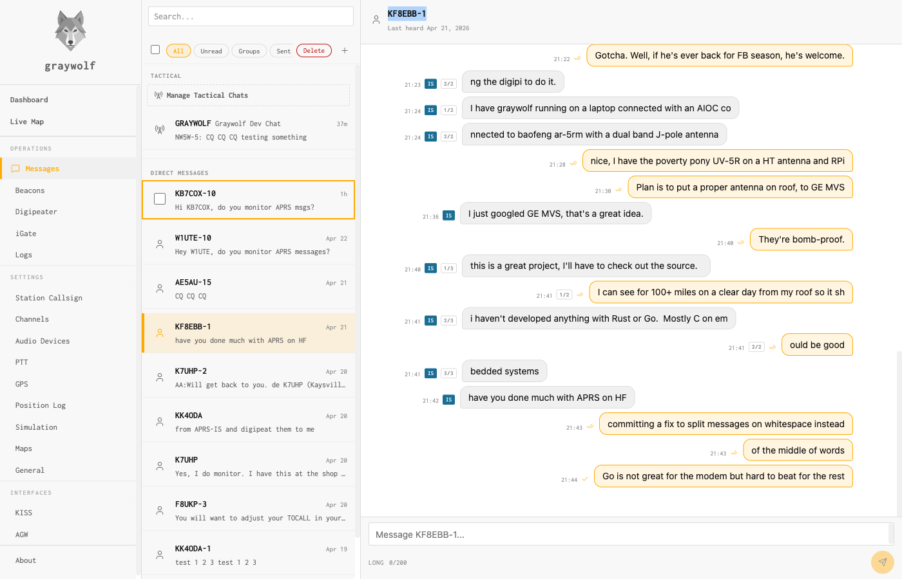
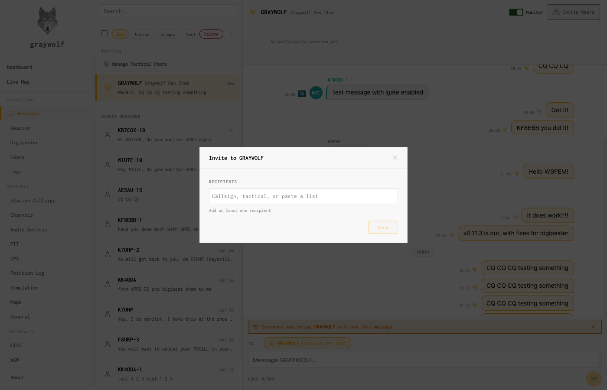

APRS
APRS Messaging
Direct APRS messages and tactical group chats
GrayWolf’s Messages page supports both direct APRS messaging to any callsign and tactical group chats — useful for coordinating a net or an incident group over RF.

Tactical groups
Create a tactical group and invite stations by callsign; messages to the group are carried over APRS to each member. This gives a small deployed team a shared, infrastructure-free chat channel.


ℹ
APRS messaging is unencrypted and shares the local frequency — keep traffic short and remember everyone in range can hear it. It is coordination, not a private channel.
OASIS · off-grid amateur station information suite